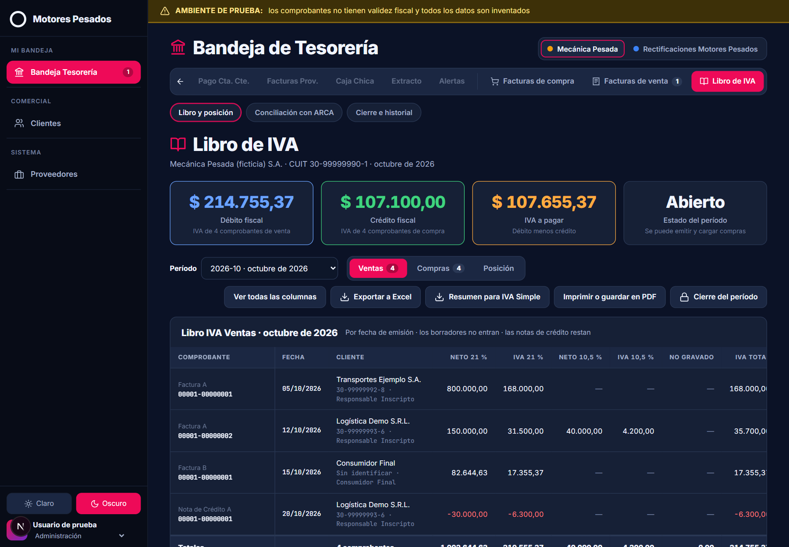
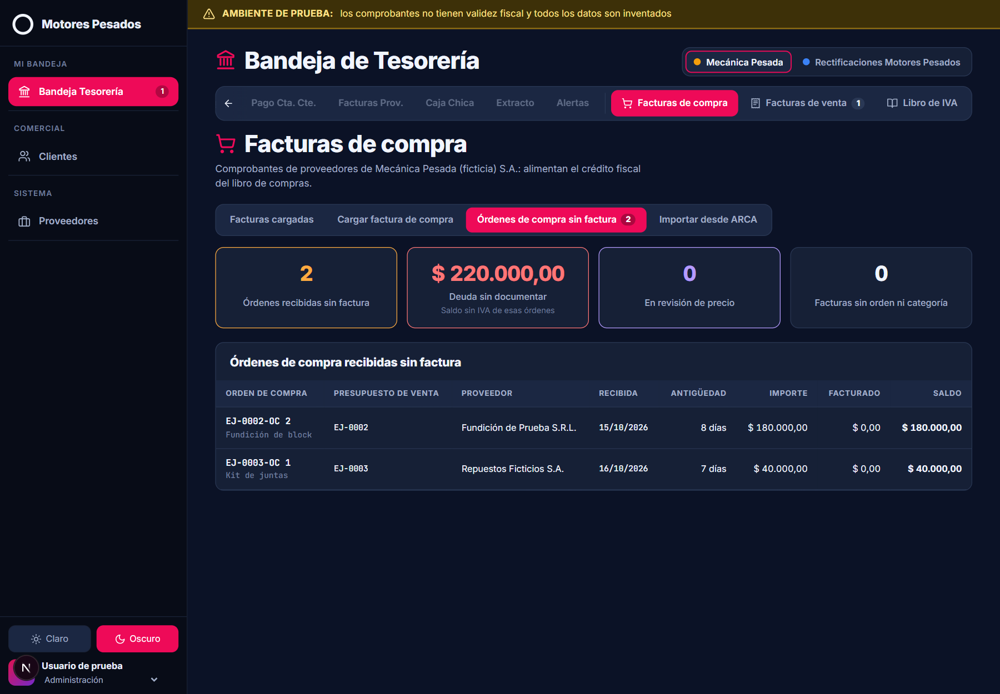
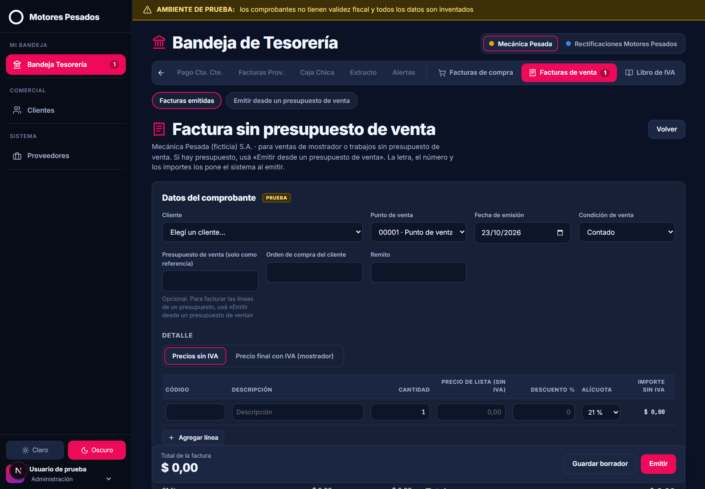

Producto 2 · Base de prueba con datos ficticios
Libro de IVA y facturación en el CRM
Qué se agregó y cómo le cambia el mes al contador
Mecánica Pesada S.A. y Rectificaciones Motores Pesados S.A.
ManIAco · octubre de 2026
El problema hoy
Hoy el IVA se arma fuera del CRM
Se factura por afuera
Ningún presupuesto ni pedido del CRM tiene número de factura: se emite con otro sistema.
El contador carga a mano
Para armar el libro de IVA vuelve a cargar los comprobantes y usa sistemas externos.
Compras con datos mezclados
En Tesorería, Facturas Prov. tiene fechas «Invalid Date», importes en cero y remitos mezclados.
Clientes sin datos fiscales
La lista no muestra CUIT ni condición frente al IVA, y ninguno de los 1.161 clientes la tiene cargada.
Órdenes sin factura
La mayoría de las órdenes recibidas no tiene su factura: es deuda con proveedores sin documentar.
Una fecha que apura
Desde el 1/12/2026, ARCA rechaza las facturas que no informan la condición frente al IVA del cliente.
Producto fusionado
Del simulador al producto
Simulador
Sirvió de especificación: pantallas, reglas y cálculos.
+
App de los developers
Next.js y Supabase. Es la base del producto.
=
Producto fusionado
Una rama con las dos cosas, lista para revisar.
Lo que se sumó a la app
Conciliación con ARCA
Resumen para IVA Simple
Órdenes de compra con tolerancia
Emitir desde el presupuesto de venta
Dólares facturados en pesos
Factura B con IVA incluido
Lista de cierre
Clientes por prioridad
Pestañas en Bandeja Tesorería
144
pruebas automáticas que pasan. Las reglas y los cálculos corren en la base de datos.
107.655,37
IVA a pagar de octubre: la misma cifra en las dos versiones.
Mi bandeja › Bandeja Tesorería
La fila de pestañas de la bandeja

Facturas de compra
Facturas cargadas, cargar una, órdenes sin factura e importar desde ARCA.
Facturas de venta
Facturas emitidas, emitir desde un presupuesto de venta y factura sin presupuesto.
Libro de IVA
Libro y posición, conciliación con ARCA, y cierre e historial.
En el celular, la fila se desplaza hacia los costados y la pestaña activa queda siempre a la vista.
Las pestañas nuevas muestran cuántos borradores hay, como las del CRM.
Libro de IVA › Libro y posición
El libro y la posición salen solos
Ventas, Compras y Posición, de cada empresa y de cada mes.
Arriba, débito, crédito e IVA a pagar. En el ejemplo de octubre: 214.755,37 − 107.100,00 = 107.655,37.
Entra lo emitido y las compras confirmadas. Las notas de crédito restan.
Controles del libro: si alguno falla, el período no se puede cerrar.
Facturas de venta › Emitir desde un presupuesto de venta
La factura sale del presupuesto
Se tildan las líneas que se facturan. Un presupuesto se puede facturar en partes.
Código, cantidad, precio, descuento y alícuota vienen del presupuesto y no se editan al facturar.
Factura sin presupuesto: un botón para el mostrador, con precio sin IVA o precio final.
En dólares: se factura en pesos, con la equivalencia en dólares y la cotización.

Bandeja Tesorería › Facturas de venta
La factura respeta el modelo de la empresa

Factura A · IVA discriminado
Factura B · IVA incluido
Misma estructura que el modelo de factura de la empresa, con datos inventados.
A: IVA discriminado por alícuota, condición de venta e importe en letras.
B: precios con IVA incluido, «A CONSUMIDOR FINAL» y el IVA contenido (Ley 27.743).
Sin CAE: lo dice el pie y lleva la marca de comprobante de prueba.
Bandeja Tesorería › Facturas de compra
Cada compra se ata a su orden
Pide lo que hoy falta en Facturas Prov.: proveedor con CUIT, fechas válidas y desglose por alícuota.
Se vincula a las órdenes de compra recibidas del mismo proveedor y empresa.
Tolerancia: el menor entre 2 % y $ 5.000. Si se pasa, la aprueban Contador o Gerencia.
Sin orden, la categoría de gasto es obligatoria: luz, alquiler, fletes…
Facturas de compra › Órdenes de compra sin factura
Las órdenes que esperan factura, a la vista
Lista las órdenes recibidas sin factura, con importe, lo facturado y el saldo.
La antigüedad se cuenta desde la recepción de la orden.
Es deuda sin documentar: hoy, la mayoría de las órdenes.
No frena el cierre: la lista de cierre la muestra solo como información.

Libro de IVA › Conciliación con ARCA
Lo que falta lo trae ARCA
1
Se baja de ARCA el archivo de «Mis Comprobantes» del mes (CSV o Excel).
2
Se sube y se compara uno por uno: coincide, difiere o falta.
3
Las que faltan se importan como borrador, con la orden o la categoría sugerida, y se confirman de una vez.
4
Se exporta el resumen para IVA Simple.

Conciliación con ARCA · ejemplo ficticio de octubre
Antes y después de importar
Al subir el archivo
3 coinciden · 1 difiere · 4 faltan
Después de importar y confirmar
6 coinciden · 1 difiere · 1 a mano

La que difiere es por la fecha. La que queda viene sin detalle por alícuota: se carga a mano.
Libro de IVA › Libro y posición
Listo para IVA Simple
Exportar a Excel el libro del período, con un clic.
Resumen para IVA Simple: totales por alícuota y ajustes a revisar.
Imprimir o guardar en PDF: el libro listo para el papel o para mandar.
Pendiente: confirmar con el contador el resumen y si necesita el formato del Libro IVA Digital.

Libro de IVA › Cierre e historial
El cierre trae su lista
Antes de cerrar muestra qué revisar: borradores, compras sin respaldo, diferencias de precio y entregas sin facturar.
Cada período muestra su saldo: «A pagar» o «A favor».
Solo bloquea si fallan los controles del libro. Lo demás son avisos.
Cerrado el mes, nada cambia con fecha de ese período.

Comercial › Clientes
Clientes ordenados por prioridad
Arriba, los clientes sin datos fiscales con más monto en presupuestos vigentes.
Muestra los presupuestos de venta vigentes de cada cliente.
Ficha fiscal: CUIT de 11 dígitos, condición frente al IVA, domicilio, provincia e Ingresos Brutos.
Sin esos datos no se puede emitir. Proveedores tiene una ficha igual.

Libro de IVA › Cierre e historial
Cada rol hace lo suyo y todo queda registrado
Historial, visto como Contador

Perfil de estudiante: solo mira

Administración: emite y carga compras.
Contador: confirma, anula y cierra el mes.
Gerencia: mira la posición y el historial.
Perfil de estudiante: mira y exporta, sin guardar nada.
Del simulador al producto
Qué cambia al usarlo
Factura sin presupuesto: un botón para el mostrador.
Al facturar, las líneas del presupuesto de venta no se editan.
El código de autorización de ARCA sirve de respaldo de la compra.
El libro suma «Imprimir o guardar en PDF».
Los saldos dicen «A pagar» o «A favor».

El mes de punta a punta
Del presupuesto a IVA Simple, sin volver a cargar
Administración
1. Emite
Las facturas salen de los presupuestos.
Administración
2. Carga
Cada factura de proveedor, contra su orden.
Contador
3. Concilia
Sube «Mis Comprobantes» e importa lo que falta.
Contador
4. Revisa
Ventas, compras y posición, con los controles.
Contador
5. Cierra
Exporta para IVA Simple y cierra con la lista.
Antes
Se factura con otro sistema y el contador carga todo a mano para armar el libro.
Ahora
El libro sale solo de lo emitido y lo cargado. ARCA completa lo que falta y queda el resumen para IVA Simple.
De dónde salen los datos
Cada dato tiene un origen
CRM
Ya existe en el CRM
Presupuestos y sus líneas
Condiciones de pago, que pasan a ser la condición de venta
Clientes, código y teléfono
Proveedores
Órdenes de compra y su recepción
Nuevo
Se carga en el módulo
Datos fiscales de clientes y proveedores
Datos de las empresas y puntos de venta
Cotización del dólar
Categoría de gasto
Períodos de IVA e historial de cambios
ARCA
Viene de ARCA
«Mis Comprobantes» recibidos y emitidos
Facturas del sistema anterior
Código de autorización de cada proveedor
Más adelante, el CAE y el QR
Calculado
Lo calcula la base de datos
Número y letra de la factura
Desglose de IVA, totales e importe en letras
Saldo y antigüedad de las órdenes
Coincide, difiere o falta
Posición de IVA
Los cobros de Tesorería no entran: no generan IVA por sí mismos. El detalle completo está en el mapa de datos.
Qué falta
Lo que todavía no es real
Fuera de alcance: el CAE real
Hace falta el certificado de cada empresa y la conexión con ARCA. Mientras tanto, las facturas salen sin CAE y marcadas como de prueba.
Base de prueba
Lo que se ve corre con una base de prueba en memoria y datos inventados. Todavía no se probó con una base de datos real de Supabase.
Pendiente
Supabase: probar el producto con una base de datos real.
Migraciones: aplicar las 6 nuevas antes de publicarlo.
Facturas Prov.: si convive con Facturas de compra o la nueva la reemplaza. Con la dueña del negocio.
Con el contador: IVA Simple, el Libro IVA Digital y la «S» en Cod. IVA.
«Mis Comprobantes»: probar con un archivo real de ARCA, sin subirlo al repositorio.
Próximos pasos
Del producto de prueba al CRM
Entregar
Con los developers
Pasarle la rama a Jere con el archivo que quedó en entregables.
Revisarla juntos, pestaña por pestaña.
Probar
Con una base de datos real
Probar el producto con una base de Supabase real.
Aplicar las 6 migraciones nuevas antes de publicarlo.
Decidir
Con la dueña del negocio y el contador
Qué pasa con Facturas Prov.
Los pendientes con el contador y los datos fiscales de los clientes antes del 1/12/2026.
Entrega final: viernes 20/11/2026. Es feriado, así que puede pasar al jueves 19 o al lunes 23.